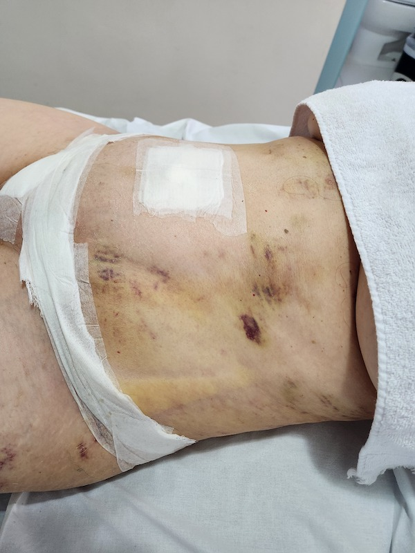
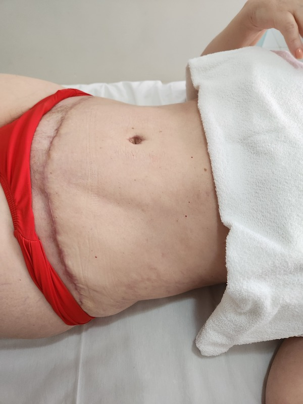

Antes

Depois
PÓS OPERATÓRIO
A recuperação é uma fase fundamental para o sucesso da sua cirurgia. Nosso tratamento pós-operatório é pensado para acelerar sua recuperação, minimizar inchaços e potencializar o resultado da sua cirurgia.
Com técnicas avançadas e acompanhamento especializado, ajudo você a alcançar o corpo dos seus sonhos com segurança e conforto.
Agende seu atendimento e garanta um pós-operatório tranquilo e eficaz!